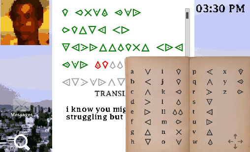
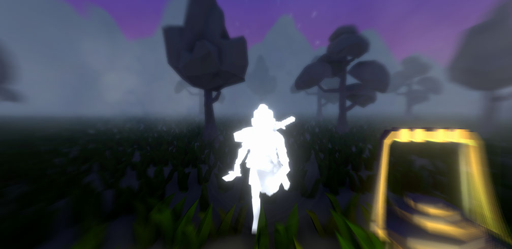
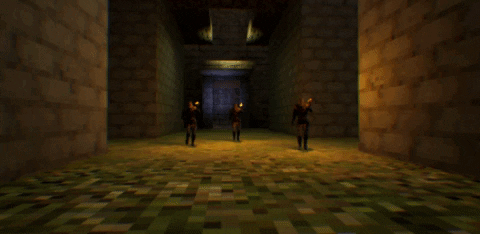

About me
Hi! I'm Edmundo Márquez an indie game developer with a passion for crafting code and enthusiast for game design.
I've been doing little games since 2019 and releasing them in my Itchio page,
i like participating as well in game jams! Currently i'm working as a freelancer and maintaning my website Fragsoft Games!

I recently finished my studies in Interactive Technologies in Animation's bachelor degree in
Universidad del Valle de México.
However not everything i know is taught in the college, i am constantly learning about game development in order to improve the quality of my projects.
When it comes to game development and life, I like to set challenges to myself, even if its to learn new tools or figure out gameplay systems.
I don't quit easily and i always strive and improve if i make a mistake, but it is something i enjoy and find compelling to do.
My Skills
|
Technical Skills
|

|
These are some of the games i have created or worked on.
2021
The Hustler Program
Unity | Development time: 1 week
Endless flying game with a gas meter that depleates each time player propulses. It has a system to generate new
lanes of coins and enemies and also basic patrols for enemies.
2020
Letters from the Outside

Unity | Development time: 48 hours
Pen pal puzzle game. Worked in a translation system and a drag-and-drop interface that imitates a desktop
application. There is a timer for solving puzzles and each letter is changed day by day.
2020
Unknown Trench

Unreal Engine 4 | Development time: 4 months
First person walking simulator where you control a rescue diver that searches for his lost crewmate. Worked in
the gameplay sequences using
Sequencer and also designed the monster boss persecution and level streaming.
2019
That Freezing Night

Unity | Development time: 48 hours
First person adventure game. Worked with Finite State Machines for the White Warrior's AI and a hint system for finding objects, also the overall lighting, UI and postprocessing were set by me. Can be completed with two different endings.
2019
Vampiric

Unreal Engine 4 | Development time: 1 week
Action stealth game where a vanpire with a grappling hook. The AI of the guards was implemented with the use of Behavior Trees
with Blueprints, they can patrol to a random radius and burn the player if he approaches.